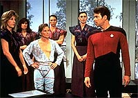
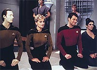
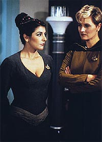

|
MANCHETE
DO EPISDIO
Manifesto
de Jornada pelo sufrgio
universal no consegue superar o bvio
Episdio
anterior | Prximo
episdio
Sinopse:
Data Estelar: 41636.9.
Procurando sobreviventes de um cargueiro chamado Odin, desaparecido
h sete anos, a Enterprise chega a Angel I, uma sociedade
matriarcal na qual os homens so considerados uma forma de vida
inferior. Riker sente-se deslocado quando Tasha e Troi assumem o
contato diplomtico, por serem mulheres.
 Os
sobreviventes, todos homens, so localizados no planeta, mas
recusam-se a voltar. Eles se casaram com mulheres de um grupo de
renegados do planeta que discordam do papel submisso do homem
naquela sociedade.
Os renegados so descobertos e condenados morte. Para salv-los,
Riker est disposto a violar a Primeira Diretriz e lev-los contra
a vontade para a Enterprise. Mas a nave est infectada com um vrus
aliengena trazido por um mau funcionamento do holodeck, e a
doutora Crusher probe a volta de qualquer pessoa a bordo.
Para piorar a situao, a Frota Estelar exige a presena da
Enterprise nas proximidades da Zona Neutra, pois os Romulanos
estariam fazendo uma incurso por l.
No fim das contas, a mdica consegue a cura para a tripulao, e
um discurso de Riker sobre a diferena entre revoluo e evoluo
convence Beata, a lder de Angel I, a exilar os rebeldes em vez de
sentenci-los morte.
Comentrios:
 "Angel
One" uma tentativa desajeitada de pregar a
universalidade da igualdade de direitos entre os sexos.
Infelizmente, o episdio no passa de um fracasso total.
No porque sua causa seja injusta, ou porque o tema no permitisse
um bom episdio, mas pelo simples fato de que ningum na produo
realmente entendeu a mensagem a ser passada. Colocando em termos
simples, em vez de criar uma metfora inteligente, mostrando um
mundo efetivamente guiado pela personalidade feminina, eles apelaram
para o bvio, criando uma civilizao base de mulheres
machonas.
Alm de transformar a alegoria original do episdio na coisa mais
bvia possvel, perderam uma excelente possibilidade de avaliar as
reais diferenas entre homens e mulheres. Em vez de espelhar a
situao das mulheres na Terra da primeira metade do sculo 20
para os homens em Angel I, no seria muito mais interessante se os
homens fossem oprimidos por conjunturas legitimamente femininas?
Em vez de dizer que os homens no tm direito a voto, por que no
dizer que naquela sociedade a poltica considerada uma atividade
menor, sendo o ambiente local muito mais ditado pela vida familiar?
Em vez de mostrar mulheres violentas e homens oprimidos pela
agressividade feminina, por que no mostrar uma civilizao em
que os esportes competitivos so menos valorizados, e o grande
entretenimento local a reunio de grandes grupos em grande sales
para debater os problemas do cotidiano e buscar o conforto de ter a
quem falar sobre seus prprios problemas?
Embora seja tambm algo espinhoso de fazer sem correr o risco de
novamente cair sobre esteretipos ou preconceitos, um mundo em que
os homens se sentiriam oprimidos por serem mesmo homens, em vez de
meramente pseudo-mulheres, certamente seria mais interessante. E
ofenderia menos a inteligncia do espectador com a apelao ao bvio.
 Alm
do problema conceitual do episdio, h os problemas de execuo.
Se em princpio a idia j no era boa, em termos de roteiro,
ficou pior ainda. Tudo se contorce para satisfazer os rumos da histria,
trazendo diversos absurdos patticos.
Nesse saco de gatos esto a contaminao de toda a tripulao
da Enterprise por um vrus criado pelo holodeck (!), a atitude
totalmente anti-tica de Riker ao se envolver romanticamente com a
lder do planeta, o comportamento imbecilizado de Tasha e Troi com
relao ao comandante, que ficou mais idiota ainda, usando aquele
ridculo vesturio local, a estpida deciso de Ramsey e seus
homens de optar pela morte em lugar de um refgio seguro na
Enterprise. Os exemplos pululam.
Por essas e outras, "Angel One" pode ser facilmente
considerado um dos piores episdios da complicada primeira
temporada da srie. No chega nem a valer uma reprise.
Citaes:
Worf - "Klingons
appreciate strong women."
("Klingons gostam de mulheres fortes.")
Ramsey - "You can't rescue a man from a place that he calls
his home."
("Voc no pode resgatar um homem de um lugar que ele chama
de lar.")
Riker - "No power in the Universe can hope to stop the force
of evolution. Be warned. The execution of Mister Ramsey and his
followers may elevate them to the status of martyrs. Martyrs cannot
be silenced."
("Nennhum poder no Universo pode esperar parar a fora da
evoluo. Esteja avisada. A execuo do sr. Ramsey e seus
seguidores pode elev-los ao status de mrtires. Mrtires no
podem ser calados.")
Trivia:
 Neste episdio os Romulanos so citados na srie pela primeira
vez.
Neste episdio os Romulanos so citados na srie pela primeira
vez.
Herman
Zimmerman, desenhista de produo da srie, inteligentemente
utilizou o cenrio do laboratrio do Dr. Soong mostrado no episdio
anterior como outro cenrio, mudando apenas algumas coisas.
O
diretor deste episdio Michael Rodes, ganhador de quatro prmios
Emmy com a srie "Insights", foi o primeiro diretor a dar
para Wil Wheaton (Wesley Crusher) um papel principal. Foi em 1981,
no programa na rede americana de televiso ABC "After School
Special".
Ficha
tcnica:
Escrito por Patrick Barry
Direo de Michael Rhodes
Exibido em 25/01/1988
Produo: 015
Elenco:
Patrick Stewart como
Jean-Luc Picard
Jonathan Frakes como William Thomas Riker
Brent Spiner como Data
LeVar Burton como Geordi La Forge
Michael Dorn como Worf
Gates McFadden como Beverly Crusher
Marina Sirtis como Deanna Troi
Wil Wheaton como Wesley Crusher
Denise Crosby como Natasha "Tasha" Yar
Elenco convidado:
Karen Montgomery
como Beata
Sam Hennings como Ramsey
Patricia McPherson como Ariel
Leonard John Crowfoot como Trent
Episdio
anterior | Prximo
episdio
|